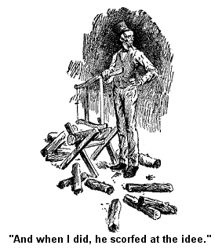
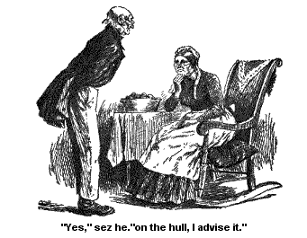
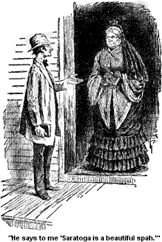
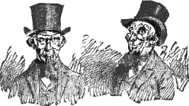

SAMANTHA AT SARATOGA.
The idee on't come to me one day about sundown, or a little before sundown.; I wuz a settin' in calm peace, and a big rockin' chair covered with a handsome copperplate, a readin' what the Sammist sez about "Vanity, vanity, all is vanity."; The words struck deep, and as I said, it was jest that very minute that the idee struck me about goin' to Saratoga.; Why I should have had the idee at jest that minute, I can't tell, nor Josiah can't.; We have talked about it sense.
But good land! such creeters as thoughts be never wuz, nor never will be.; They will creep in, and round, and over anything, and get inside of your mind (entirely unbeknown to you) at any time.; Curious, haint it? -- How you may try to hedge 'em out, and shet the doors and everything.; But they will creep up into your mind, climb up and draw up their ladders, and there they will be, and stalk round independent as if they owned your hull head; curious!
Well, there the idee wuz -- I never knew nothin' about it, nor how it got there.; But there it wuz, lookin' me right in the face of my soul, kinder pert and saucy, sayin', "You'd better go to Saratoga next summer; you and Josiah."
But I argued with it.; Sez I, "What should we go to Saratoga for?; None of the relations live there on my side, or on hison; why should we go?"
But still that idee kep' a hantin me; "You'd better go to Saratoga next summer, you and Josiah."; And it whispered, "Mebby it will help Josiah's corns."; (He is dretful troubled with corns.); And so the idee kep' a naggin' me, it nagged me for three days and three nights before I mentioned it to my Josiah.; And when I did, he scorfed at the idee.; He said, "The idee of water curing them dumb corns -- "
Sez I, "Josiah Allen, stranger things have been done;" sez I, "that water is very strong.; It does wonders."
And he scorfed agin and sez, "Don't you believe faith could cure em?"

Sez I, "If it wuz strong enough it could."
But the thought kep a naggin' me stiddy, and then -- here is the curious part of it -- the thought nagged me, and I nagged Josiah, or not exactly nagged; not a clear nag; I despise them, and always did.; But I kinder kep' it before his mind from day to day, and from hour to hour.; And the idee would keep a tellin' me things and I would keep a tellin' 'em to my companion.; The idee would keep a sayin' to me, "It is one of the most beautiful places in our native land.; The waters will help you, the inspirin' music, and elegance and gay enjoyment you will find there, will sort a uplift you.; You had better go there on a tower;" and agin it sez, "Mebby it will help Josiah's corns."
And old Dr. Gale a happenin' in at about that time, I asked him about it (he doctored me when I wuz a baby, and I have helped 'em for years.; Good old creetur, he don't get along as well as he ort to.; Loontown is a heALT hy place.); I told him about my strong desire to go to Saratoga, and I asked him plain if he thought the water would help my pardner's corns.; And he looked dreadful wise and he riz up and walked across the floor 2 and fro several times, probably 3 times to, and the same number of times fro, with his arms crossed back under the skirt of his coat and his eyebrows knit in deep thought, before he answered me.; Finely he said, that modern science had not fully demonstrated yet the direct bearing of water on corn.; In some cases it might and probably did stimulate 'em to greater luxuriance, and then again a great flow of water might retard their growth.
Sez I, anxiously, "Then you'd advise me to go there with him?"
"Yes," sez he, "on the hull, I advise you to go."

Them words I reported to Josiah, and sez I in anxious axents, "Dr. Gale advises us to go."
And Josiah sez, "I guess I shan't mind what that old fool sez."
Them wuz my pardner's words, much as I hate to tell on 'em.; But from day to day I kep' it stiddy before him, how dang'r'us it wuz to go ag'inst a doctor's advice.; And from day to day he would scorf at the plan.; And I, ev'ry now and then, and mebby oftener, would get him a extra good meal, and attack him on the subject immegatly afterwards.; But all in vain.; And I see that when he had that immovible sotness onto him, one extra meal wouldn't soften or molify him.; No, I see plain I must make a more voyalent effort.; And I made it.; For three stiddy days I put before that man the best vittles that these hands could make, or this brain could plan.
And at the end of the 3d day I gently tackled him agin on the subject, and his state wuz such, bland, serene, happified, that he consented without a parlay.; And so it wuz settled that the next summer we wuz to go to Saratoga.; And he began to count on it and make preparation in a way that I hated to see.
Yes, from the very minute that our two minds wuz made up to go to Saratoga Josiah Allen wuz set on havin' sunthin new and uneek in the way of dress and whiskers.; I looked coldly on the idee of puttin' a gay stripe down the legs of the new pantaloons I made for him, and broke it up, also a figured vest.; I went through them two crisises and came out triumphent.
Then he went and bought a new bright pink necktie with broad long ends which he intended to have float out, down the front of his vest.; And I immegatly took it for the light-colored blocks in my silk log-cabin bedquilt.; Yes, I settled the matter of that pink neck-gear with a high hand and a pair of shears.; And Josiah sez now that he bought it for that purpose, for the bedquilt, because he loves to see a dressy quilt, -- sez he always enjoys seein' a cabin look sort o' gay.; But good land! he didn't.; He intended and calculated to wear that neck-tie into Saratoga, -- a sight for men and angels, if I hadn't broke it up.
But in the matter of whiskers, there I was powerless.; He trimmed 'em (unbeknow to me) all off the side of his face, them good honerable side whiskers of hisen, that had stood by him for years in solemnity and decency, and begun to cultivate a little patch on the end of his chin.; I argued with him, and talked well on the subject, eloquent, but it wuz of no use, I might as well have argued with the wind in March.
He said, he wuz bound on goin' into Saratoga with a fashionable whisker, come what would.
And then I sithed, and he sez, -- " You have broke up my pantaloons, my vest, and my neck-tie, you have ground me down onto plain broadcloth, but in the matter of whiskers I am firm! Yes!" sez he "on these whiskers I take my stand!"
And agin I sithed heavy, and I sez in a dretful impressive way, as I looked on 'em, "Josiah Allen, remember you are a father and a grandfather!"
And he sez firmly, "If I wuz a great-grandfather I would trim my whiskers in jest this way, that is if I wuz a goin' to set up to be fashionable and a goin' to Saratoga for my heALT h."
And I groaned kinder low to myself, and kep' hopin' that mebby they wouldn't grow very fast, or that some axident would happen to 'em, that they would get afire or sunthin'.; But they didn't.; And they grew from day to day luxurient in length, but thin.; And his watchful care kep' 'em from axident, and I wuz too high princepled to set fire to 'em when he wuz asleep, though sometimes, on a moonlight night, I was tempted to, sorely tempted.
But I didn't, and they grew from day to day, till they wuz the curiusest lookin' patch o' whiskers that I ever see.; And when we sot out for Saratoga, they wuz jest about as long as a shavin' brush, and looked some like one.; There wuz no look of a class-leader, and a perfesser about 'em, and I told him so.; But he worshiped 'em, and gloried in the idee of goin' afar to show 'em off.
But the neighbors received the news that we wuz goin' to a waterin' place coldly, or with ill-concealed envy.
Uncle Jonas Bently told us he shouldn't think we would want to go round to waterin' troughs at our age.
And I told him it wuzn't a waterin' trough, and if it wuz, I thought our age wuz jest as good a one as any, to go to it.
He had the impression that Saratoga wuz a immense waterin' trough where the country all drove themselves summers to be watered.; He is deef as a Hemlock post, and I yelled up at him jest as loud as I dast for fear of breakin' open my own chest, that the water got into us, instid of our gettin' into the water, but I didn't make him understand, for I hearn afterwards of his sayin' that, as nigh as he could make out we all got into the waterin' trough and wuz watered.
The school teacher, a young man, with long, small lims, and some pimpley on the face, but well meanin', he sez to me: "Saratoga is a beautiful spah."

And I sez warmly, "It aint no such thing, it is a village, for I have seen a peddler who went right through it, and watered his horses there, and he sez it is a waterin' place, and a village."
"Yes," sez he, "it is a beautiful village, a modest retiren city, and at the same time it is the most noted spah on this continent."
I wouldn't contend with him for it wuz on the stoop of the meetin' house, and I believe in bein' reverent. But I knew it wuzn't no "spah," -- that had a dreadful flat sound to me. And any way I knew I should face its realities soon and know all about it. Lots of wimen said that for anybody who lived right on the side of a canal, and had two good, cisterns on the place, and a well, they didn't see why I should feel in a sufferin' condition for any more water; and if I did, why didn't I ketch rain water?
Such wuz some of the deep arguments they brung up aginst my embarkin' on this enterprise, they talked about it sights and sights; -- why, it lasted the neighbors for a stiddy conversation, till along about the middle of the winter. Then the Minister's wife bought a new alpacky dress -- unbeknown to the church till it wuz made up -- and that kind o' drawed their minds off o' me for a spell.
Aunt Polly Pixley wuz the only one who received the intelligence gladly. And she thought she would go too. She had been kinder run down and most bed rid for years. And she had a idee the water might help her. And I encouraged Aunt Polly in the idee, for she wuz well off. Yes, Mr. and Miss Pixley wuz very well off though they lived in a little mite of a dark, low, lonesome house, with some tall Pollard willows in front of the door in a row, and jest acrost the road from a grave-yard.
Her husband had been close and wuzn't willin' to have any other luxury or means of recreation in the house only a bass viol, that had been his father's -- he used to play on that for hours and hours. I thought that wuz one reason why Polly wuz so nervous. I said to Josiah that it would have killed me outright to have that low grumblin' a goin' on from day to day, and to look at them tall lonesome willows and grave stuns.
But, howsumever, Polly's husband had died durin' the summer, and Polly parted with the bass viol the day after the funeral. She got out some now, and wuz quite wrought up with the idee of goin' to Saratoga.
But Sister Minkley; sister in the church and sister-in-law by reason of Wbitefield, sez to me, that she should think I would think twice before I danced and wALT zed round wALT zes.
And I sez, "I haint thought of doin' it, I haint thought of dancin' round or square or any other shape."
Sez she, "You have got to, if you go to Saratoga."
Sez I, "Not while life remains in this frame."
And old Miss Bobbet came up that minute -- it wuz in the store that we were a talkin' -- and sez she, "It seems to me, Josiah Allen's wife, that you are too old to wear low-necked dresses and short sleeves."
"And I should think you'd take cold a goin' bareheaded," sez Miss Luman Spink who wuz with her.
Sez I, lookin' at 'em coldly, "Are you lunys or has softness begun on your brains?"
"Why," sez they, "you are talking about goin' to Saratoga, hain't you?"
"Yes," sez I.
"Well then you have got to wear 'em," says Miss Bobbet. "They don't let anybody inside of the incorporation without they have got on a low-necked dress and short sleeves."
"And bare-headed," sez Miss Spink; "if they have' got a thing on their heads they won't let 'em in."
Sez I, "I don't believe it"
Sez Miss Bobbet, "It is so, for I hearn it, and hearn it straight. James Robbets's wife's sister had a second cousin who lived neighbor to a woman whose niece had been there, been right there on the spot. And Celestine Bobbet, Uncle Ephraim's Celestine, hearn it from James'es wife when she wuz up there last spring, it come straight. They all have to go in low necks."
"And not a mite of anything on their heads," says Miss Spink.
Sez I in sarcastical axents, "Do men have to go in low necks too?"
"No," says Miss Bobbet. "But they have to have the tails of their coats kinder pinted. Why," sez she, "I hearn of a man that had got clear to the incorporation and they wouldn't let him in because his coat kinder rounded off round the bottom, so he went out by the side of the road and pinned up his coat tails, into a sort of a pinted shape, and good land the incorporation let him right in, and never said a word."
I contended that these things wuzn't so, but I found it wuz the prevailin' opinion. For when I went to see the dressmaker about makin' me a dress for the occasion, I see she felt just like the rest about it. My dress wuz a good black alpacky. I thought I would have it begun along in the edge of the winter, when she didn't have so much to do, and also to have it done on time. We laid out to start on the follerin' July, and I felt that I wanted everything ready.
I bought the dress the 7th day of November early in the forenoon, the next day after my pardner consented to go, and give 65 cents a yard for it, double wedth. I thought I could get it done on time, dressmakers are drove a good deal. But I felt that a dressmaker could commence a dress in November and get it done the follerin' July, without no great strain bein' put onto her; and I am fur from bein' the one to put strains onto wimmen, and hurry 'em beyend their strength. But I felt Almily had time to make it on honor and with good buttonholes.
"Well," she sez, the first thing after she had unrolled the alpacky, and held it up to the light to see if it was firm -- sez she:
"I s'pose you are goin' to have it made with a long train, and low neck and short sleeves, and the waist all girted down to a taper?"
I wuz agast at the idee, and to think Alminy should broach it to me, and I give her a piece of my mind that must have lasted her for days and days. It wuz a long piece, and firm as iron. But she is a woman who likes to have the last word and carry out her own idees, and she insisted that nobody was allowed in Saratoga -- that they wuz outlawed, and laughed at if they didn't have trains and low necks, and little mites of waists no bigger than pipe-stems.
Sez I, "Alminy Hagidone, do you s'pose that I, a woman of my age, and a member of the meetin' house, am a goin' to wear a low-necked dress?"
"Why not?," sez she, "it is all the fashion and wimmen as old agin as you be wear 'em."
Well, sez I, "It is a shame and a disgrace if they do, to say nothin' of the wickedness of it. Who do you s'pose wants to see their old skin and bones? It haint nothin' pretty anyway. And as fer the waists bein' all girted up and drawed in, that is nothin' but crushed bones and flesh and vitals, that is just crowdin' down your insides into a state o' disease and deformity, torturin' your heart down so's the blood can't circulate, and your lungs so's you can't breathe, it is nothin' but slow murder anyway, and if I ever take it into my head to kill myself, Alminy Hagidone, I haint a goin' to do it in a way of perfect torture and torment to me, I'd ruther be drownded."
She quailed, and I sez, "I am one that is goin' to take good long breaths to the very last." She see I wuz like iron aginst the idee of bein' drawed in, and tapered, and she desisted. I s'pose I did look skairful. But she seemed still to cling to the idee of low necks and trains, and she sez sort a rebukingly:
"You ortn't to go to Saratoga if you haint willin' to do as the rest do. I spose," sez she dreamily, "the streets are full of wimmen a walkin' up and down with long trains a hangin' down and sweepin' the streets, and ev'ry one on 'em with low necks and short sleeves, and all on 'em a flirting with some man"
"Truly," sez I, "if that is so, that is why the idee come to me. I am needed there. I have a high mission to perform about. But I don't believe it is so."
"Then you won't have it made with a long train?" sez she, a holdin' up a breadth of the alpacky in front of me, to measure the skirt.
"No mom!" sez I, and there wuz both dignity and deep resolve in that "mom." It wuz as firm and stern principled a "mom" as I ever see, though I say it that shouldn't. And I see it skairt her. She measured off the breadths kinder trembly, and seemed so anxious to pacify me that she got it a leetle shorter in the back than it wuz in the front. And (for the same reason) it fairly clicked me in the neck it wuz so high, and the sleeves wuz that long that I told Josiah Allen (in confidence) I was tempted to knit some loops across the bottom of 'em and wear 'em for mits.
But I didn't, and I didn't change the dress neither. Thinkses I, mebby it will have a good moral effect on them other old wimmen there. Thinkses I, when they see another woman melted and shortened and choked fur principle's sake, mebby they will pause in their wild careers.
Wall, this wuz in November, and I wuz to have the dress, if it wuz a possible thing, by the middle of April, so's to get it home in time to sew some lace in the neck. And so havin' everything settled about goin' I wuz calm in my frame most all the time, and so wuz my pardner.
And right here, let me insert this one word of wisdom for the special comfort of my sect and yet it is one that may well be laid to heart by the more opposite one. If your pardner gets restless and oneasy and middlin' cross, as pardners will be anon, or even oftener -- start them off on a tower. A tower will in 9 cases out of 10 lift 'em out of their oneasiness, their restlessness and their crossness.
Why this is so I cannot tell, no more than I can explain other mysteries of creation, but I know it is so. I know they will come home more placider, more serener, and more settled-downer. Why I have known a short tower to Slab City or Loontown act like a charm on my pardner, when crossness wuz in his mean and snappishness wuz present with him. I have known him to set off with the mean of a lion and come back with the liniment of a lamb. Curious, haint it?
And jest the prospect of a tower ahead is a great help to a woman in rulin' and keepin' a pardner straight and right in his liniments and his acts. Somehow jest the thought of a tower sort a lifts him up in mind, and happifys him, and makes him easier to quell, and pardners must be quelled at times, else there would be no livin' with 'em. This is known to all wimmen companions and and men too. Great great is the mystery of pardners.
